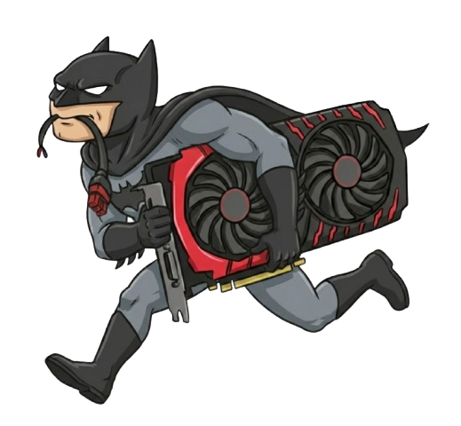

Hey, I'm Omar!
I'm an AI engineer, deep learning researcher, and full-stack developer. I've been building AI solutions and writing on this blog about everything from generative AI and NLP to big data, deep learning, and the engines that power today’s AI systems.
Everything on this site is written by me, not AI.

Blog
Guides, references, and tutorials.
Notes
Life, research, projects, and everything else.
Deep Dives
Long-form tutorials on a variety of development topics.
DeblurGAN-v2: State-of-the-Art Motion Deblurring
Building Production-Ready Computer Vision Systems
Full-Stack Tourism Platform with Odoo
Optimizing Neural Networks for Mobile
Modern CNN Architectures: LeNet to EfficientNet
Generative Models: GANs, VAEs, and Diffusion
Data Pipeline Design for ML Projects
MLOps: From Notebook to Production
Mathematical Foundations of Deep Learning
Building Multilingual NLP Systems
Adversarial Robustness in Computer Vision
Attention Mechanisms and Transformers
Projects
Open-source projects I've worked on over the years.
2024
DeblurGAN-v2 Web Platform
Advanced image deblurring with real-time processing
2024
Morocco Tourism Booking
Complete Odoo-based tourism platform
2023
Tifinagh OCR
Character recognition for Amazigh script
2023
Neural Style Transfer
Artistic style transfer using CNNs
2022
COVID-19 X-Ray Classifier
Deep learning for medical imaging
2022
Face Mask Detector
Real-time detection with MobileNet